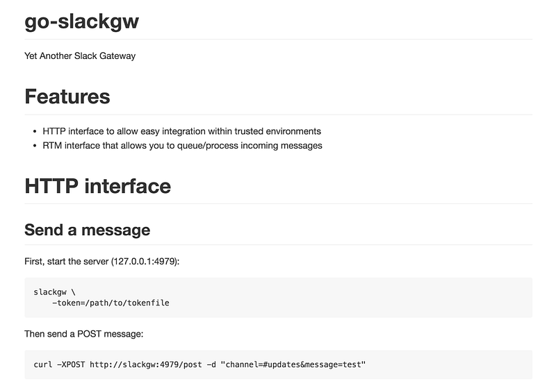
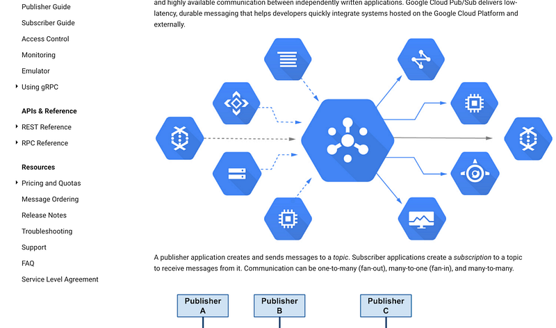
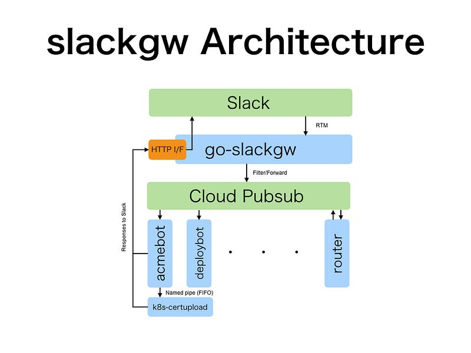
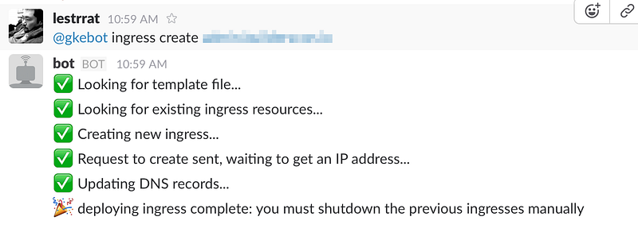
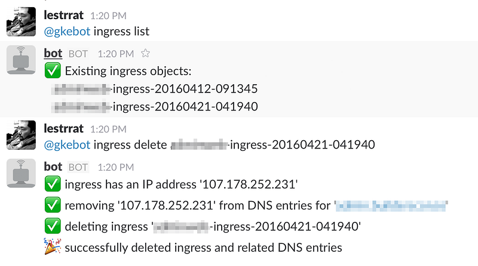

My Slackbot Setup For GKE
My Slackbot Setup For GKE
So in a previous installment (sorry, Japanese only), I realized that in order to use Kubernetes ingress resources (and perform maintainance without downtime, such as updating SSL certificates), I need to bring up multiple generations of ingress resources up, then use DNS to switch over which ingress receives the traffic.

This is relatively straight forward, but requires manual intervention to update DNS entries that matches the newly brought up ingress (this in reality is a new instance of GCP’s HTTP(s) Load Balancer). You need to wait for the load balancer to get an IP address, and then finally update the DNS, etc etc… The same thing goes when you bring an existing ingress resource.
So clearly this is screaming “You need to automate this!!!”. So how do we go about doing it?
Write a Slack Gateway
I’m such a hipster that my natural selection is to use Slack as the interface to automate this. So first I need a Slack-to-my-bot gateway. There exists a few solutions for this already. I’d been a fan of Ikachan, which is a tool that provides an HTTP interface to post to IRC channels. There’s a Slack equivalent for this called Takosan, so I looked at it first.
But this is an HTTP-to-Slack gateway. I also need a tool that gives me access to Slack’s Real Time Messaging (RTM). I was first going to fork and send a pull request to Takosan, but then as I was writing the code for it, I realized that the code was starting to deviate quite a lot… so I made a new repo for it, go-slackgw.

After a few tries, I realized that you need to push these messages into some sort of a queue. Well, I’m working in GCP, so Cloud Pubsub it is.

So now I had tool that can post to Slack, listen to incoming messages on Slack, and then filter/forward events to Cloud Pubsub. Alright, now the real bot part…
The Bots
I knew I was going to have bot(s) that can understand multiple commands — and I was not going to shove all the code in one bot. So I wanted to route events to different pubsub topics depending on the message content.
go-slackgw first forwards all Message events (i.e., the actual text that you type in Slack) to 1 topic. Then there’s a component named slackrouter that subscribes to this topic, and multiplexes the messages to appropriate topics.
There’s a “acmebot” that does all the Let’s Encrypt / ACME interaction. And there’s a “deploybot” that does the deployment to Kubernetes.
These bots do exactly what I just described, but there’s a catch. I was writing all of this in Go: The higher-level library to Google Cloud Platform APIs is at google.golang.org/cloud, and uses the lower level API google.golang.org/api. These bots also needed to interact with Kubernetes, so I needed to use k8s.io/kubernetes as well.
The problem starts here: as of this writing (Apr 2016), k8s.io/kubernetes is fixed to use google.golang.org/api from approximately 1 year ago. But the API that I want to use from google.golang.org/cloud requires the lower api to from as recent as 3 month ago. You can see where this is going.
This means I needed to create separate binaries for components that talk to GCP API using the higher level libraries, and those that talk to Kubernetes.
I could also create more pubsub topics to connect these components, but at this point it is getting ridiculous. Using pubsubintroduces a significant amount of latency in exchange for delivery guarantees. This time I decided to try to be creative with the Kubernetes Pod structure.
Abusing The Pod Structure
Pods have a guarantee that containers specified in the same Pod will be run on the same node, there by allowing us to share local resources within the same node. For example, you can create a shared directory on the node, populate it from one node, and mount it from another to share the same set of files.
Using the same logic, we should be able to share a named pipe (FIFO) between containers within the same Pod.

So voila, now I had all the bits and pieces ready to plug as many workers as I needed later. Coolness.
Putting Everything Together
With all of the foundations laid down, the bot is ready. I was afraid of completely breaking stuff when an ingress deploy failed midway, so I made the deploy 3 steps. First step brings up a new ingress, waits for it to be ready, and then adds its IP address to the pre-existing DNS entry.

The next requires human intervention for now. I’m sure this can be automated, but right now we don’t have an automatic way to make sure that the ingress is properly handling the traffic, so we ask the user to check that that the ingress is working, and remove the DNS entry for the old ingress, if need be.
The third step brings down the existing ingress, and removes any remaining DNS records, if any.

And all was good. This has been a fun trip to look within GCP Load Balancers, Kubernetes Ingress, ways to use various GCP and Kubernetes APIs, and working with Cloud Pubsub. I look forward to doing more in the future.